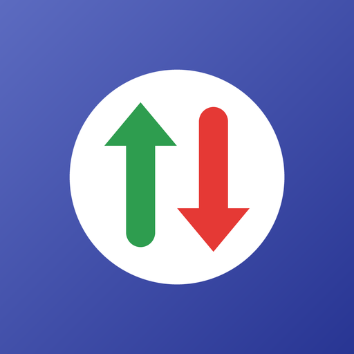

Política de privacidad
Gestor de ingresos y gastos
Última actualización: 22 de octubre de 2026
Esta política explica qué información maneja la aplicación para Android Gestor de ingresos y gastos (la “App”), desarrollada por Oscar Ramírez (RamzLabs), Guadalajara, Jalisco, México (el “Desarrollador”), y cómo se utiliza.
- Tus ingresos, gastos, categorías y ajustes se guardan solo en tu teléfono. El Desarrollador no tiene servidores y no puede verlos.
- La App no requiere crear una cuenta.
- Si tú lo decides, puedes respaldar tus datos en tu propia cuenta de Google Drive. La App solo puede ver los archivos de respaldo que ella misma crea.
- La App muestra anuncios de Google AdMob, que recopila ciertos datos del dispositivo (como el ID de publicidad) para mostrar y medir anuncios.
1. Tu información financiera
La App te permite registrar ingresos y gastos (monto, moneda, categoría, fecha y una nota opcional), configurar categorías y ver reportes y gráficos. Esta información:
- Se guarda en una base de datos privada de la App dentro de tu dispositivo.
- Se procesa únicamente en tu teléfono (los reportes y gráficos se calculan ahí).
- No se envía a servidores del Desarrollador ni a terceros, no se usa con fines publicitarios y no se comparte con anunciantes.
La App no se conecta a tus cuentas bancarias ni a tarjetas, y no procesa pagos.
2. Respaldo en Google Drive (opcional)
Si tocas Conectar con Google Drive, Google te pedirá autorizar a la App con el permiso “Ver, editar, crear y borrar solo los archivos específicos de Google Drive que uses con esta app” (drive.file). Con ese permiso:
- La App crea en tu Drive la carpeta “Gestor de ingresos y gastos” y guarda ahí los respaldos (archivos JSON con tus movimientos, categorías y ajustes) cuando tú lo pides.
- La App lista, descarga y, si se lo indicas, elimina únicamente esos respaldos. No puede ver ni modificar ningún otro archivo de tu Google Drive.
- La App lee el correo electrónico de tu cuenta de Google solo para mostrarte con qué cuenta estás conectado; no lo guarda ni lo envía a nadie.
- La comunicación ocurre directamente entre tu teléfono y Google. Los respaldos no pasan por servidores del Desarrollador.
El uso y la transferencia de la información recibida de las API de Google por parte de la App se ajustan a la Política de datos de usuario de los servicios de API de Google, incluidos los requisitos de Uso limitado. Los datos de Google Drive no se usan para publicidad, no se venden ni se transfieren a terceros, y no se usan para entrenar modelos de inteligencia artificial.
Puedes desconectar tu cuenta en cualquier momento desde Ajustes → Respaldo en Google Drive → Desconectar, o retirar el acceso en myaccount.google.com/connections. Los respaldos que ya estén en tu Drive seguirán ahí hasta que los borres.
3. Publicidad (Google AdMob)
La App usa Google AdMob para mostrar anuncios. El SDK de Google Mobile Ads puede recopilar y procesar automáticamente:
- El ID de publicidad de Android.
- La dirección IP y la ubicación aproximada derivada de ella.
- Información del dispositivo y del sistema (modelo, versión de Android, idioma).
- Interacciones con los anuncios y datos de diagnóstico y rendimiento.
Google usa estos datos para mostrar anuncios, medir su rendimiento, prevenir fraudes y, cuando lo permites, personalizar la publicidad. Tus registros financieros nunca se comparten con AdMob. Más información:
4. Consentimiento y control de los anuncios
- Si te encuentras en el Espacio Económico Europeo, el Reino Unido o Suiza, la App te pedirá tu consentimiento antes de usar tus datos para anuncios personalizados. Puedes cambiar tu elección en cualquier momento desde Ajustes → Opciones de privacidad de anuncios.
- En cualquier país puedes restablecer o eliminar tu ID de publicidad, o desactivar la personalización de anuncios, en Ajustes de Android → Google → Anuncios (o Ajustes → Seguridad y privacidad → Otros ajustes de privacidad → Anuncios).
5. Permisos de la App
- Internet y estado de la red: para cargar anuncios y, si lo usas, para el respaldo en Google Drive.
- ID de publicidad: lo usa AdMob según lo descrito arriba.
La App no accede a tus contactos, cámara, micrófono, archivos del teléfono ni ubicación precisa.
6. Conservación y eliminación de datos
Tus datos permanecen en tu dispositivo hasta que los eliminas desde la App, borras los datos de la App desde los ajustes de Android o la desinstalas. Los respaldos en Google Drive permanecen en tu cuenta hasta que los eliminas desde la App o desde Google Drive. Como el Desarrollador no guarda copias, no puede recuperar tu información si se pierde. Para los datos que trata Google, consulta la política de Google.
7. Seguridad
La base de datos se guarda en el almacenamiento privado de la App, al que otras aplicaciones no pueden acceder. La comunicación con Google Drive usa conexiones cifradas (HTTPS). Te recomendamos proteger tu teléfono con bloqueo de pantalla.
8. Menores de edad
La App es una herramienta de finanzas personales que no está dirigida a menores de 13 años. No recopilamos de forma intencional información de menores.
9. Cambios a esta política
Podemos actualizar esta política. Publicaremos la versión vigente en esta misma página con su fecha de actualización.
10. Contacto
Si tienes preguntas sobre esta política o sobre tus datos, escribe a oscarivanramirezruiz96@gmail.com.